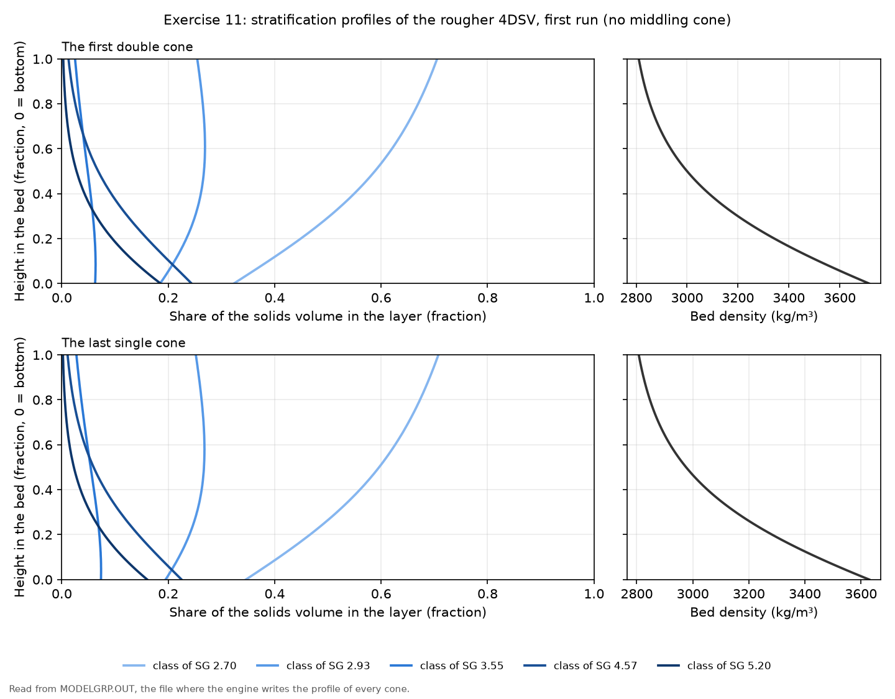
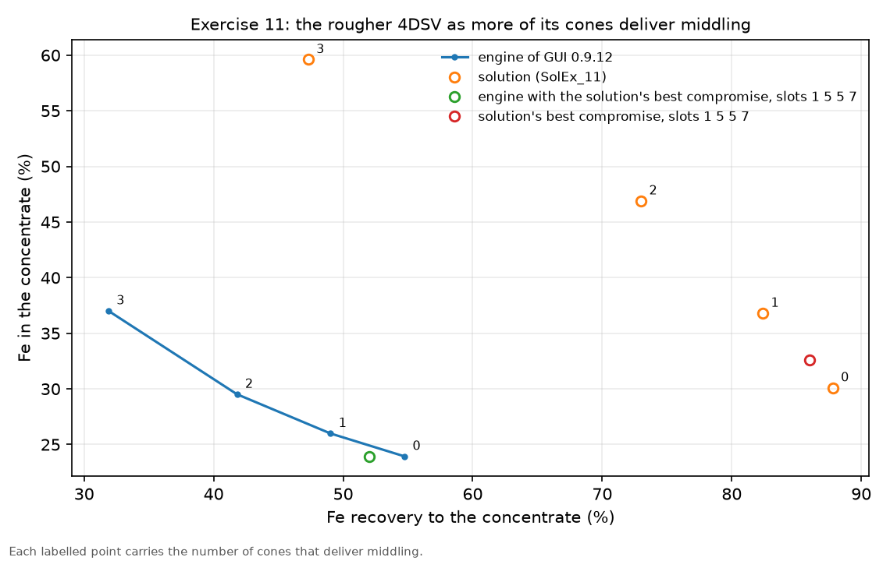
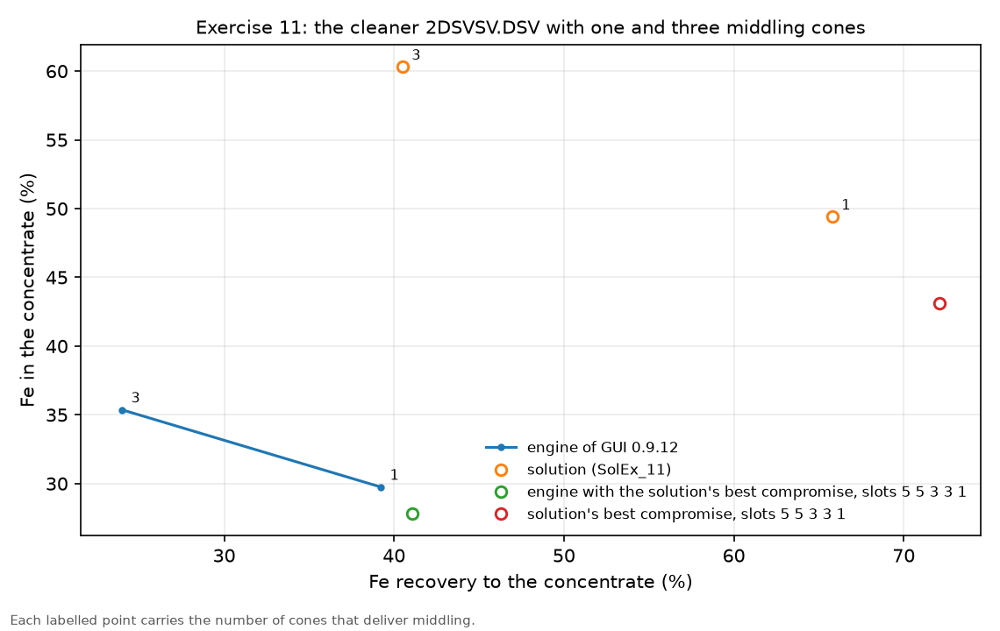
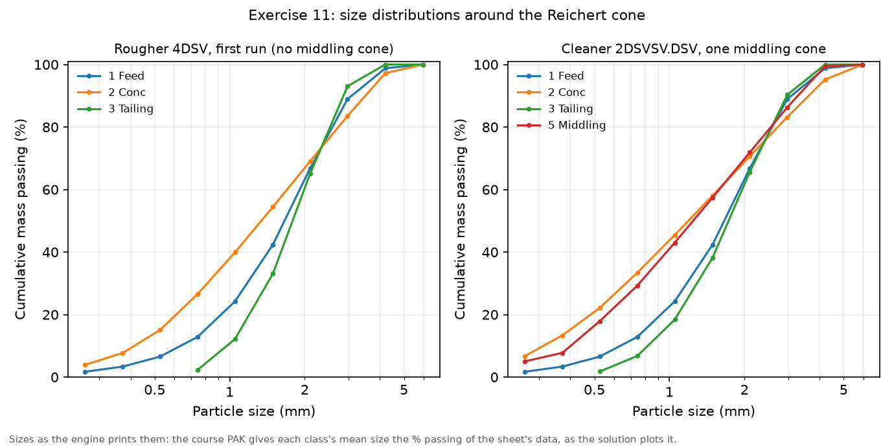

Exercise 11: model for Reichert cones
module 4 · King 7.3 (stratification and the Reichert cone)
Read in King: King 7.3 · Autogenous media separators · p. 231
The exercise sheet and the worked files live on the PC copy of Malla; the sheet's numbers are transcribed in this guide.
On this page
What they ask
The sheet is Ex_11.pdf (Bertil Pålsson, 2010-11-03, two pages). Sluices and cones are cheap, and one cone on its own does not separate much, so their strength is that stages can be combined into almost any circuit; the sheet notes dryly that some people actually do build all of them. The exercise asks how the Reichert cone model reacts to the common changes in a simple circuit.
The flowsheet (2.1). Start from the base flowsheet of Exercise 10, a feed into a mixer, and put one Reichert cone behind the mixer. The cone's middling goes back to the mixer.
The material (2.2). The iron ore of Exercise 10, unchanged: magnetite and silicate in five density classes, ten size classes up to 5 mm. The feed is 60 t/h at 60 % solids.
3.1 Rougher cone. Set the cone tower to the configuration 4DSV, use the point of convergence (POC) for iron ore, and leave the other parameters at their defaults.
- Run the first simulation.
- Plot the particle size distributions.
- Plot the stratification profiles of the first double cone and of the last single cone. Any difference, and if so, why?
- Check the report. Does it explain the result?
- Let 1, 2 and 3 cones deliver middling, in turn, and run each.
- Plot the circuit result in a grade and recovery diagram, each point labelled with its number of middling cones.
- Try to find the slot setting that gives the best combination of grade and recovery.
3.2 Cleaner cone. Set up the cone in the configuration 2DSVSV.DSV, with the last cone producing middling.
- Run the first simulation. How does the result differ from the rougher's?
- Plot the particle size distributions.
- Plot the stratification profiles of the first double cone and of the last single cone.
- Check the report.
- Try to find the slot settings that give the best grade and recovery.
How the work flows
This is one machine on one fixed ore, looked at in two stacks. The ore, the feed and the mixer are those of Exercise 10, so nothing about the material is chosen here. What changes is the inside of the cone tower: how many of its lower cones send their concentrate back as middling, and where each slot splits the bed. The rougher gets two loops. The first one moves the number of middling cones from 0 to 3, one run each, and those four runs draw the rougher's grade and recovery curve. The second one moves the slots, looking for a point above that curve, which is the only kind of change that is a real improvement rather than a trade. The cleaner then repeats the reading on a stack built for cleaning.
- Fixed for every run: the ore of Exercise 10, the feed of 60 t/h at 60 % solids, the mixer with the middling returned to it, the cone model CONE with its stratification constant at the default 0.002, and the iron-ore flow constants: POC (−31.0, 2.5) and slope 0.0359.
- Chosen once per stack: the configuration, 4DSV for the rougher and 2DSVSV.DSV for the cleaner.
- Turned: in the rougher, first the number of middling cones (0, 1, 2 and 3) at slots 5 5 5 5, then the slots one at a time; in the cleaner, the slots.
- Read after each run: the concentrate's tonnage and % Fe (so its Fe recovery), the report's split for every cone, the magnetite in the heavies of every stage, and the stratification profiles.
- Compared at the end: the rougher's four points and its best slot setting in one grade and recovery diagram, the cleaner against the rougher, and one sentence on why the profiles of the first and the last cone differ.
What you touch, read and wait for, run by run:
| Run | What you change | What you read | When to stop |
|---|---|---|---|
| Rougher, first run | Nothing beyond the sheet: 4DSV, slots 5 5 5 5, no middling cone, the iron-ore POC | Concentrate and tailing in t/h and % Fe; the report's splits; the profiles of the first double cone and the last single cone | After one run: the reference point of the diagram |
| Rougher, middling cones | The number of stage concentrates that make up the middling: 1, 2, then 3 | The concentrate's % Fe and Fe recovery; convergence of the middling loop | After the run with 3: four points make the curve |
| Rougher, slots | One slot per run, with the middling count you prefer | Whether the new point lies above the curve (more grade at the same recovery) or on it | When no slot moves the point above the curve |
| Cleaner | Configuration 2DSVSV.DSV, last cone to middling; then its slots | The same readings, set beside the rougher's | When you can say what the second single cone of each module adds |
How to check a run
- The feed and the balance. The feed fly-out reads 19.0 % Fe, as in Exercise 10. The concentrate and the tailing carry the 60 t/h and its 11.4 t/h of iron between them; the middling circulates and does not leave.
- The middling loop. With one or more middling cones the cone's feed after the mixer is more than 60 t/h (76 t/h in the cleaner's first run), and the run only counts once the engine reports that it converged.
- The report, stage by stage. Each stage lists the share of its flow that its cones send to the concentrate and the magnetite in the heavies it removes. The magnetite must fall from stage to stage, because every stage takes some of it out of the bed that goes on.
- The point in the diagram. A new setting that gives more grade and less recovery, or the other way round, is a trade along the same curve. Only a point with more of one and no less of the other is better.
Why (the engineering)
How a Reichert cone separates. The pulp is washed down the inside of an inverted cone as a sliding bed. The turbulence of the flowing water makes the bed stratify, with the heavy particles moving to its floor, and because the area of the cone shrinks towards its centre the bed thickens as it slides, which helps the lighter particles rise through it. At the bottom a slit in the floor, the gap, lets the lowest layers fall through as concentrate while the upper layers pass over it. A bullnose splitter above the gap is set by the slot, from 1 (the most material to the concentrate) to 9 (the least). King describes the device in section 7.3.5 and Figure 7.12.
Modules and stacks. A double cone (D) splits the flow over two cone surfaces with a fixed gap, which lets one stage take more feed; a single cone with a variable gap (SV) follows it. A DSV module is a double cone and a single cone, and a DSVSV module adds a second single cone that cleans the concentrate once more. Stacks repeat these modules: 4DSV is four DSV modules, used for roughing, and 2DSVSV.DSV is two DSVSV modules and a final DSV, used for cleaning (King, Figures 7.14 and 7.15). A middling is made from the concentrates of the lowest cones of the stack and is usually returned to its feed.
Two models in one. MODSIM computes every cone in two steps, as King lays out on page 250.
- How much the gap takes. The concentrate taken off at the gap grows in a straight line with the solids flowing down the cone, and the lines of all slots meet at one point, the point of convergence. The slope of each line is , so slot 9 has a flat line and slot 1 the steepest. The point depends on the ore: King's Table 7.4 gives (−7.3, 6.0) for beach sands and (−31.0, 2.5) for iron ore and magnetite sand. The window's defaults are the beach-sand values, and the sheet asks for the iron-ore ones.
- What the gap takes. The stratification model of Exercise 10 gives the bed's profile at the gap, and the bed is cut at the height that yields the take-off of the first step. The cone stratifies far less sharply than a jig, which is why its default constant is only 0.002 (King fits iron-ore data on a single cone with 0.0008).
Why middling cones trade recovery for grade. When the concentrate of a lower cone goes to the middling instead of to the final concentrate, the concentrate loses the poorest of its parts, so its grade rises; that material comes back through the mixer and gets another chance, but some of it ends in the tailing, so the recovery falls. Every extra middling cone moves the result further along the same grade and recovery curve. The slots can change the shape of that curve, which is what item 7 looks for.
Before MODSIM: numbers by hand
The first split of the report, by hand. Take the double cone at the top of the rougher. It spreads the 60 t/h over its two surfaces, 30 t/h each. With the iron-ore constants and slot 5 the slope is , and the take-off of one surface is
That is a split of 11.26 / 30 = 0.375, which is exactly the first split the engine's report prints for this run. So the report's first number is nothing more than the flow model, and you can check it in ten seconds.
What the slot does. With the same 30 t/h:
- Slot 1: slope , so t/h, a split of 0.67.
- Slot 5: 11.26 t/h, a split of 0.375.
- Slot 9: slope 0, so t/h whatever the feed, a split of 0.08.
What the POC does. With the window's beach-sand defaults, slot 5 gives t/h, a split of 0.379, almost the same as with the iron-ore point. At slot 1 the two part: t/h (0.56) against 20.0 t/h (0.67). So a run at slots 5 5 5 5 barely shows whether you typed the right point of convergence, and the slot search of item 7 does.
The critical feed rate. If the flow down one surface is small enough, the line says the gap would take more than arrives, and then everything goes to the concentrate with no separation at all. Setting equal to the feed at slot 5:
So below about 8 t/h per cone surface, about 16 t/h on a double cone, a slot-5 cone does nothing. King makes the same point: each slot has a critical feed rate that must be exceeded.
Grade and recovery from the fly-outs. The engine's first rougher run gives a concentrate of 26.1 t/h at 23.9 % Fe from 60 t/h at 19.0 % Fe, so
which is the point labelled 0 in the rougher's diagram.
Step by step in MODSIM
The ready-made projects: not in the Examples folder yet, and why
The PC copy of Malla has this exercise solved on the MODSIM engine in Simulation of Mineral Processing/Examples/Ex11 Reichert cones/: the rougher with 0 to 3 middling cones and the solution's best slots, the cleaner, the answers to the sheet's questions and five figures. The projects to open in the GUI are not there yet.
- Why. The cone needs the ore of Exercise 10, whose five density classes change with size, and no project saved by GUI 0.9.12 shows yet how the GUI stores such a material. Once Reichert1Cone.PAK or BatacJig.PAK has been saved once from the GUI as a project, the rougher projects join the folder, each checked against the engine's runs.
- The cleaner may stay on the engine. The GUI's cone window holds eleven values, the layout of 4DSV, and 2DSVSV.DSV needs twelve (see the watch-out of step 7).
- Meanwhile. Reichert1Cone.PAK opens in the GUI with the ore defined and the rougher with one middling cone, which is the solution's run of item 5.
Start from the base flowsheet of Exercise 10 and put one Reichert cone behind the mixer
Open your Exercise 10 project and Save As Ex11_rougher; delete the machine behind the mixer; place a Reichert Cone; connect Mixer-1 > cone, cone concentrate > "Concentrate", cone tailing > "Tailing", cone middling > back into Mixer-1The feed and the convergence settings
Material Definition > Streams > Feed Stream: 60 t/h at 60 % solids; Size_Conv. > Convergence method and maximum iterationsHow to fill this window
- Solids feed rate = 60 t/h
- Percent solids = 60
- Maximum iterations = 60
- Convergence method = Modified Newton for a first try, Bounded Wegstein if the middling loop does not converge
The cone window: 4DSV, slots 5 5 5 5, the iron-ore point of convergence
Double-click the cone > Model: CONE (the only one) > fill the fields as in the fold belowReichert Cone → CONE, the Reichert cone: eleven fields
- Specific stratification constant (α) = 0.002, the default. How sharply the particles sort by density in the sliding bed. It stands for no knob on a real cone, so it is not the number to move to reach a grade.
- Number of cones in parallel = 1. One tower takes the 60 t/h.
- Cone configuration = 5 (4DSV) for the rougher. The list runs from 1 (SV, one single cone) to 9 (2DSVSV.DSV), and the configuration decides how many slot fields the window shows.
- Slot 1, Slot 2, Slot 3 and Slot 4 = 5 each for the first run. One per stage, from 1 (the most to the concentrate) to 9 (the least). Item 7 moves them.
- Number of stage concentrates making up the middlings stream = 0 for the first run, then 1, 2 and 3 for item 5. It counts the lowest stages of the tower whose concentrate goes to the middling instead of to the final concentrate.
- Point of convergence X (POC1) = −31.0, Point of convergence Y (POC2) = 2.5, slope coefficient = 0.0359. The iron-ore constants of King's Table 7.4 and of the course's ReichertCone.xls; the defaults are King's beach-sand values.
Run, then read the products, the report and the profiles
Run; read the fly-outs; open the cone's report; plot the size curves of feed, concentrate and tailing; plot the profiles of the first double cone and the last single coneOne, two and three middling cones, and the grade and recovery diagram
Cone window: middling stages 1, Run, read; then 2; then 3; save each run under its own name (Ex11_mid1, Ex11_mid2, Ex11_mid3)Try to leave the curve with the slots
Keep the middling count you prefer; move one slot per run (towards 1 for more take-off, towards 9 for a cleaner cut); Run and plot each point in the same diagramThe cleaner: 2DSVSV.DSV with its last cone to middling
Save As Ex11_cleaner; cone window: configuration 9 (2DSVSV.DSV); slots 5 5 5 5 for the four fields the window shows; middling stages 1; Run with Bounded WegsteinSave each run, and draw the cleaner's points beside the rougher's
Save the cleaner runs; put the cleaner's points (one and three middling cones, and the solution's best slots 5 5 3 3 1) in the diagram of the rougherExpected results
The engine of GUI 0.9.12 reproduces the solution's trends but not its numbers: every run separates less sharply than in the solution, as the jig of Exercise 10 does, whose model also rests on stratification. In every pair below the engine's number comes first and the solution's second.
Rougher, 4DSV, slots 5 5 5 5, no middling cone.
| Stream | t/h | % solids | % Fe |
|---|---|---|---|
| Cone feed | 60 / 60 | 60 / 60 | 19 / 19 |
| Concentrate | 26.1 / 33.3 | 60 / 60 | 23.9 / 30.1 |
| Tailing | 33.9 / 26.8 | 60 / 60 | 15.2 / 5.19 |
| Stage | Concentrate splits, engine | Concentrate splits, solution | % magnetite in its heavies |
|---|---|---|---|
| DSV stage 1 | 0.375, 0.515 | 0.272, 0.409 | 46.6 / 65.1 |
| DSV stage 2 | 0.417, 0.627 | 0.311, 0.433 | 28.6 / 48.82 |
| DSV stage 3 | 0.459, 0.724 | 0.365, 0.462 | 25.1 / 31.34 |
| DSV stage 4 | 0.502, 0.782 | 0.442, 0.479 | 22.4 / 18.14 |
The difference starts in the first stage: the engine's cones send more of the flow to the concentrate, and the heavies they remove are poorer. The report explains the result the way the solution says, with the stages removing the magnetite one after another.

- The profiles (item 3). The solution sees the last cone depleted of heavy particles, with a bed density that hardly changes with height. On the engine the last cone is only a little poorer than the first, which fits its weaker separation: less magnetite leaves with the first stages' heavies, so more of it reaches the last cone.
- The size curves (item 2). The solution sees little change in size over the cone. On the engine the concentrate comes out somewhat finer than the feed and the tailing coarser, with a of 1.34 mm and 1.79 mm against the feed's 1.66 mm.
| Cones delivering middling | Fe recovery % | % Fe in the concentrate |
|---|---|---|
| 0 | 54.7 / 87.8 | 23.9 / 30.1 |
| 1 | 49 / 82.4 | 26 / 36.8 |
| 2 | 41.8 / 73 | 29.5 / 46.9 |
| 3 | 31.9 / 47.3 | 37 / 59.6 |
| 1, slots 1 5 5 7 (best compromise) | 52 / 86 | 23.9 / 32.6 |

- The best slots (item 7). The solution tried to move the working point beyond its curve, failed, and settled on slots 1 5 5 7 with one middling cone. On the engine that setting gives less recovery at the same grade as the run without middling cones, so it does not help there.
Cleaner, 2DSVSV.DSV, slots 5 5 5 5 1, one middling cone (run on the engine with twelve values).
| Stream | t/h | % solids | % Fe |
|---|---|---|---|
| Cone feed | 76 / 73.3 | 60 / 60 | 19.3 / 20.2 |
| Concentrate | 15 / 15.2 | 60 / 60 | 29.7 / 49.4 |
| Tailing | 44.6 / 44.8 | 60 / 60 | 16.9 / 8.71 |
| Middling | 15.5 / 13.3 | 60 / 60 | 15.7 / 25.5 |
| Cones delivering middling | Fe recovery % | % Fe in the concentrate |
|---|---|---|
| 1 | 39.2 / 65.8 | 29.7 / 49.4 |
| 3 | 24 / 40.5 | 35.4 / 60.3 |
| 1, slots 5 5 3 3 1 (best compromise) | 41.1 / 72.1 | 27.8 / 43.1 |
- How it differs from the rougher (item 1). The concentrate is cleaner, because each DSVSV module cleans its concentrate again on its second single cone, as the solution explains. On the engine the second module's second single cone gets no flow, so only the first module cleans twice, and the grade stays far below the solution's 49.4 %.
- The profiles (item 3). On both engines they are nearly the rougher's: the first double cone's bed density at the floor is 3730 kg/m³ against the rougher's 3716.
- The slots (item 5). The solution's 5 5 3 3 1 gives more recovery and less grade than the standard slots on both engines, and the solution concludes that the standard settings suit this ore.

Common mistakes
- Leaving the beach-sand point of convergence. The window opens with (−7.3, 6.0). At slots 5 5 5 5 it hardly shows, and at slot 1 it takes a sixth less than the iron-ore line, so the slot search of item 7 goes wrong.
- A middling count with no middling stream. If the middling port is not connected back to the mixer, the middling leaves the flowsheet or goes nowhere, and the grade and recovery come out wrong.
- Reading an unconverged run. Three middling cones and the cleaner need Bounded Wegstein on this engine; check the convergence line before reading the fly-outs.
- Calling a point further along the curve an improvement. More grade for less recovery is a trade. Item 7 asks for a point above the curve.
- Moving the stratification constant to reach a grade. It stands for no setting of a real cone; the slots and the middling cones are the knobs.
- Trusting a GUI run of 2DSVSV.DSV. Its fifth slot has no field in the GUI's window (step 7).
- Expecting the solution's numbers. This engine separates less sharply on every cone; compare directions, not numbers.
Sensitivity analysis
- Middling cones. From 0 to 3 at slots 5 5 5 5 the rougher moves from 54.7 % recovery at 23.9 % Fe to 31.9 % at 37.0 % Fe on the engine, and from 87.8 % at 30.1 % to 47.3 % at 59.6 % in the solution: the same direction, a lower curve.
- Slots. By the flow model of Before MODSIM, one step of slot moves a surface's take-off by t/h at 30 t/h of feed, about 7 % of the flow, so the first slots, which see the most flow, move the result the most.
- The cleaner's slots. 5 5 3 3 1 against 5 5 5 5 1 gains about 2 points of recovery and loses about 2 points of grade on the engine.
- The point of convergence. With the beach-sand values, slot 1 takes 16.7 t/h of a 30 t/h surface instead of 20.0, a sixth less.

Hand-in checklist
Nothing of this exercise is graded, but the sheet asks to show: